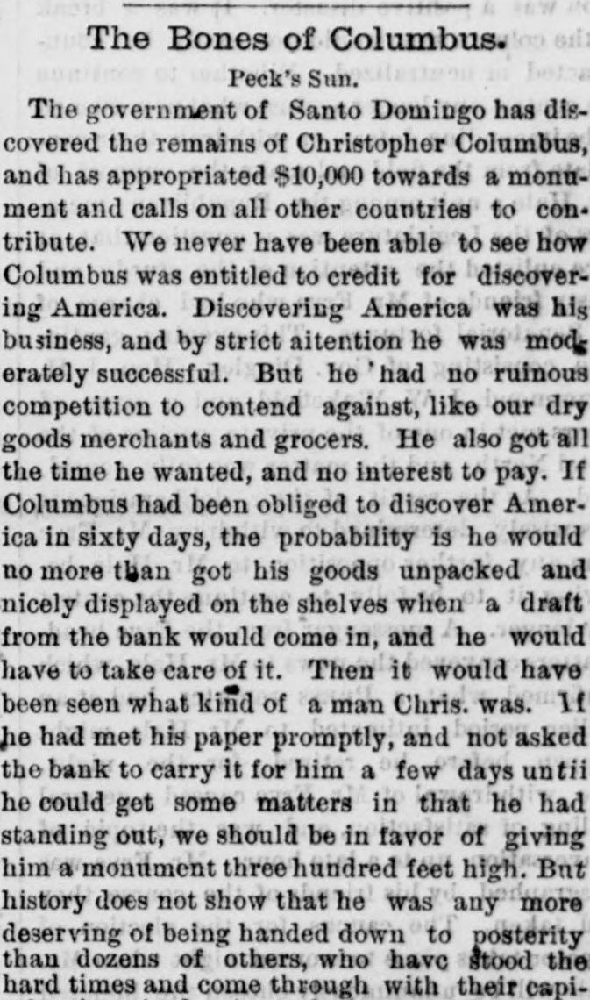

Article in transcriptionArtículo en transcripción
The Portland Daily Press. Portland, Me., January 7, 1881. Page 1. Published by N.A. Foster & Co. A daily newspaper, 1862–1921.The Portland Daily Press. Portland, Me., 7 de enero de 1881. Página 1. Publicado por N.A. Foster & Co. Periódico diario, 1862–1921. View the originalVer el original

This article is being transcribed again from the original newspaper page. It is not available to read in the meantime; it will return as soon as the new transcription is ready.Este artículo se está transcribiendo de nuevo desde la página original del periódico. Mientras tanto no está disponible para su lectura; volverá en cuanto la nueva transcripción esté lista.
FULL TEXT:TEXTO COMPLETO:
The Portland Daily Press January 7, 18817 de enero de 1881
Original in English.Original en inglés.
The Bones of Columbus.Los restos de Colón.
Peck's Sun.Peck's Sun.
The government of Santo Domingo has discovered the remains of Christopher Columbus, and has appropriated $10,000 towards a monument and calls on all other countries to contribute. We never have been able to see how Columbus was entitled to credit for discovering America. Discovering America was his business, and by strict aitention he was moderately successful. But he had no ruinous competition to contend against, like our dry goods merchants and grocers. He also got all the time he wanted, and no interest to pay. If Columbus had been obliged to discover America in sixty days, the probability is he would no more than got his goods unpacked and nicely displayed on the shelves when a draft from the bank would come in, and he would have to take care of it. Then it would have been seen what kind of a man Chris. was. If he had met his paper promptly, and not asked the bank to carry it for him a few days untii he could get some matters in that he had standing out, we should be in favor of giving him a monument three hundred feet high. But history does not show that he was any more deserving of being handed down to posterity than dozens of others, who have stood the hard times and come through with their capital unimpaired. As we look at it, Columbus was a monopolist and not even Ferdinand and Isabella dared to open their yawp to him. When he got back from a cruise, if he had discovered any countries he turned them over with a lofty air as though he was the only man on the job that amounted to anything; if he had not come across any countries, and a hint was dropped that he had probably missed a continent or two somewhere, he was on his ear in a minute. But as far as his discovery of America is concerned there are conflicting opinions. Columbus, of course, claims that he discovered America, but the accounts in the Montezuma newspapers do not support this theory. They claim that when Columbus came in sight of land he was so overjoyed that he opened two or three fresh bottles of the oldest vintage and drank to his own health. Some of the leading men, the representatives of America, put off in a small boat, boarded the ship and after hunting around awhile they opened the cabin door and there on the floor they discovered Columbus. So it appears that instead of Columbus discovering America, America discovered Columbus. Modesty kept the Americans from laying any claim to the discovery of Columbus, as they had been there themselves, but as soon as Columbus had slept it off, and pulled out a few eyewinkers, he went blowing around how he had discovered America just for a flyer. This story of Columbus's was all well enough for Ferdinand and Isabella, but he could not give the Americans any Autumr leaves, as they knew the circumstances too well. So it seems the Dominicans have found the bones of Christopher Columbus after a lapse of nearly a hundred years. We congratulate them sincerely upon the find. They might have done worse.El gobierno de Santo Domingo ha descubierto los restos de Cristóbal Colón, ha asignado 10.000 dólares para un monumento y hace un llamamiento a todos los demás países para que contribuyan. Nunca hemos podido comprender por qué Colón tenía derecho al mérito de haber descubierto América. Descubrir América era su ocupación, y con estricta atención tuvo un éxito moderado. Pero no tuvo que enfrentarse a una competencia ruinosa, como nuestros comerciantes de telas y tenderos. Además, dispuso de todo el tiempo que quiso y sin intereses que pagar. Si Colón hubiera estado obligado a descubrir América en sesenta días, lo más probable es que apenas hubiera terminado de desembalar sus mercancías y exponerlas con esmero en las estanterías cuando le habría llegado una letra del banco, y habría tenido que hacerle frente. Entonces se habría visto qué clase de hombre era Cristóbal. Si hubiera liquidado sus pagarés con puntualidad y no le hubiera pedido al banco que se los prorrogara unos días hasta poder cobrar algunos asuntos pendientes, estaríamos a favor de erigirle un monumento de trescientos pies de altura. Pero la historia no demuestra que él mereciera más pasar a la posteridad que docenas de otros que han resistido los tiempos difíciles y han salido adelante con su capital intacto. A nuestro modo de ver, Colón era un monopolista y ni siquiera Fernando e Isabel se atrevían a levantarle la voz. Cuando regresaba de una travesía, si había descubierto algún país lo entregaba con aire altivo, como si fuera el único hombre en la tarea que valiera algo; si no se había topado con ningún país y se insinuaba que probablemente se le había escapado un continente o dos en alguna parte, se enfurecía al instante. Pero en lo que respecta a su descubrimiento de América, existen opiniones encontradas. Colón, desde luego, sostiene que descubrió América, pero las crónicas de los periódicos de Moctezuma no respaldan esta teoría. Afirman que cuando Colón avistó tierra estaba tan eufórico que abrió dos o tres botellas recién descorchadas de la cosecha más añeja y brindó a su propia salud. Algunos de los hombres prominentes, los representantes de América, partieron en una pequeña barca, abordaron la nave y, tras buscar un rato, abrieron la puerta del camarote y allí, en el suelo, descubrieron a Colón. De modo que parece que, en lugar de que Colón descubriera América, fue América la que descubrió a Colón. La modestia impidió a los americanos atribuirse reclamo alguno por el descubrimiento de Colón, puesto que ellos ya estaban allí, pero tan pronto como Colón durmió la mona y se sacó las legañas, se fue por ahí fanfarroneando de cómo había descubierto América solo por probar fortuna. Esta historia de Colón estuvo bastante bien para Fernando e Isabel, pero a los americanos no les pudo vender gato por liebre, pues conocían las circunstancias demasiado bien. De modo que parece que los dominicanos han encontrado los huesos de Cristóbal Colón tras un lapso de casi cien años. Les felicitamos sinceramente por el hallazgo. Podrían haber hecho algo peor.